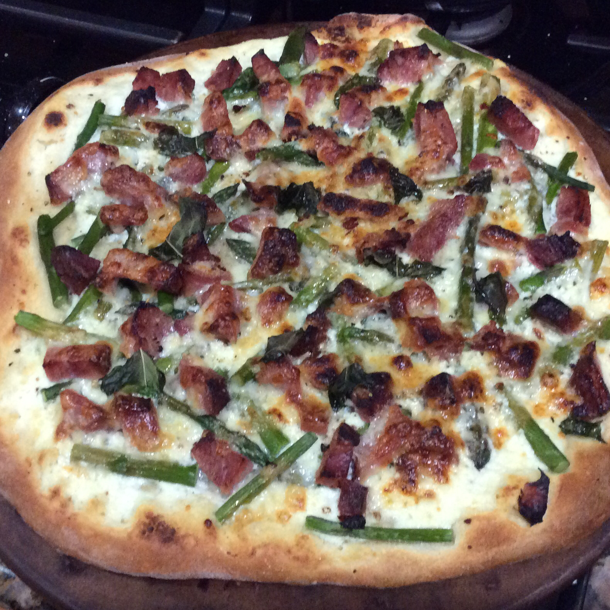

Pizza with Ham, Asparagus, and Ricotta

Description
Every once in a while I get a craving for a non-tomato sauce, or 'white' pizza. 'New pizza ideas' is always a popular food wish, and I hope this ricotta spread inspires lots of pizza experimentation in your kitchen.
Ingredients
- 1 cup fresh asparagus, trimmed
- ½ cup ricotta cheese
- ¼ cup olive oil
- 2 cloves garlic, minced
- 1 pinch red pepper flakes, or to taste
- salt and freshly ground black pepper to taste
- 2 tablespoons heavy cream
- 2 tablespoons chopped herbs, such as basil, parsley, rosemary, thyme (Optional)
- 1 pound pizza dough (see footnote for recipe link)
- 1 tablespoon flour, for dusting
- ½ cup diced smoked ham
- ½ cup shredded sharp white Cheddar cheese
- 1 tablespoon finely grated Parmigiano-Reggiano cheese
steps
- Preheat an oven to 550 degrees F (285 degrees C).
- Bring a large pot of lightly salted water to a boil. Add asparagus and cook uncovered until just tender, about 2 minutes. Drain in a colander, then immediately immerse in ice water for several minutes. Once asparagus is cold, drain well and set aside.
- Combine ricotta, olive oil, garlic, red pepper flakes, salt, black pepper, and heavy cream in a small bowl. Stir in fresh herbs (if using) and set aside.
- To shape the pizza dough, sprinkle the countertop and dough surface with flour and lightly pat flat. Use a rolling pin to form a thin disk about 9 inches in diameter. Transfer to a baking sheet.
- Spread ricotta mixture over crust, top with ham and asparagus. Sprinkle with Cheddar and Parmigiano-Reggiano cheeses.
- Place baking sheet on the bottom rack of the preheated oven and bake for 5 minutes. Transfer the baking sheet to the top rack and bake for an additional 5 minutes.